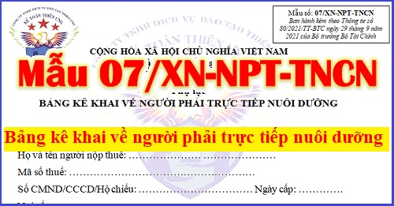

Mẫu 07/XN-NPT-TNCN Bảng kê khai về người phải trực tiếp nuôi dưỡng theo Thông tư 80/2021/TT-BTC mới nhất năm 2024 trong bộ hồ sơ chứng minh để được giảm trừ người phụ thuộc.
Chú ý:
- Từ ngày 1/1/2022 Mẫu 09/XN-NPT-TNCN bản kê khai về người phải trực tiếp nuôi dưỡng theo Thông tư 92/2015/TT-BTC sẽ không còn áp dung nữa -> Thay vào đó là Mẫu 07/XN-NPT-TNCN bảng kê khai về người phải trực tiếp nuôi dưỡng theo Thông tư 80/2021/TT-BTC, cụ thể như sau:
--------------------------------------------------------------------
|
Mẫu số 07/XN-NPT-TNCN
Ban hành kèm theo Thông tư số 80/2021/TT-BTC ngày 29 tháng 9 năm 2021 của Bộ trưởng Bộ Tài Chính |
CỘNG HÒA XÃ HỘI CHỦ NGHĨA VIỆT NAM
Độc lập - Tự do - Hạnh phúc
Phụ lục
BẢNG KÊ KHAI VỀ NGƯỜI PHẢI TRỰC TIẾP NUÔI DƯỠNG
Độc lập - Tự do - Hạnh phúc
Phụ lục
BẢNG KÊ KHAI VỀ NGƯỜI PHẢI TRỰC TIẾP NUÔI DƯỠNG
Kính gửi: Ủy ban nhân dân (UBND) xã/phường……… ……
Họ và tên người nộp thuế: ………………… …………………
Mã số thuế: ………………………………………………
Số CMND/CCCD/Hộ chiếu: …………………………… Ngày cấp: ………….
Nơi cấp: ………………………………………………
Chỗ ở hiện nay: ……………………
Tôi kê khai người phụ thuộc sau đây tôi đang trực tiếp nuôi dưỡng:
| STT |
Họ và tên người phụ thuộc |
Ngày, tháng, năm sinh |
Số CMND/ CCCD Hộ chiếu |
Quan hệ với người khai |
Địa chỉ cư trú của người phụ thuộc |
Đang sống cùng với tôi |
Không nơi nương tựa, tôi đang trực tiếp nuôi dưỡng |
| 1 | |||||||
| 2 | |||||||
| ... |
Căn cứ theo quy định tại Luật thuế thu nhập cá nhân (TNCN), Luật sửa đổi, bổ sung một số điều của Luật thuế TNCN và các văn bản hướng dẫn thi hành Luật thuế TNCN thì UBND xã/phường nơi người nộp thuế cư trú có trách nhiệm xác nhận người phụ thuộc đang sống cùng người nộp thuế hoặc UBND xã/phường nơi người phụ thuộc cư trú có trách nhiệm xác nhận người phụ thuộc không sống cùng người nộp thuế và không có ai nuôi dưỡng.
Tôi cam đoan những nội dung kê khai trên là đúng sự thật và chịu trách nhiệm trước pháp luật về những nội dung đã khai./.
| ..., ngày 15 tháng 09 năm 2026 | |
| NGƯỜI LÀM ĐƠN | |
| (Ký, ghi rõ họ tên) |
|
XÁC NHẬN CỦA UBND XÃ/PHƯỜNG (nơi người nộp thuế cư trú trong trường hợp người phụ thuộc đang sống cùng người nộp thuế): UBND xã/phường………… xác nhận người được kê khai trong biểu (nêu trên) hiện đang sống cùng ông (bà)………………………. tại địa chỉ………………………………./. …, ngày … tháng … năm … TM. UBND……………………… (Ký, ghi rõ họ tên, đóng dấu) |
|
XÁC NHẬN CỦA UBND XÃ/PHƯỜNG (nơi người phụ thuộc cư trú trong trường hợp người phụ thuộc không nơi nương tựa, người nộp thuế đang trực tiếp dưỡng): UBND xã/phường ……………..…… xác nhận người được kê khai trong biểu (nêu trên) không nơi nương tựa, đang sống tại địa chỉ………………/. …, ngày … tháng … năm … TM. UBND……………………… (Ký, ghi rõ họ tên, đóng dấu) |
Ghi chú: Trường hợp người nộp thuế có nhiều người phụ thuộc cư trú tại nhiều xã/phường khác nhau thì người nộp thuế phải lập Bản kê khai để UBND xã/phường từng nơi người phụ thuộc cư trú xác nhận.
--------------------------------------------------------------------------------------------
Bản kê khai về người phải trực tiếp nuôi dưỡng sử dụng khi nào?
|
Theo khoản 9 Thông tư 111/2013/TT-BTC quy định: d.4) Các cá nhân khác không nơi nương tựa mà người nộp thuế đang phải trực tiếp nuôi dưỡng và đáp ứng điều kiện tại điểm đ, khoản 1, Điều này bao gồm: d.4.1) Anh ruột, chị ruột, em ruột của người nộp thuế. d.4.2) Ông nội, bà nội; ông ngoại, bà ngoại; cô ruột, dì ruột, cậu ruột, chú ruột, bác ruột của người nộp thuế. d.4.3) Cháu ruột của người nộp thuế bao gồm: con của anh ruột, chị ruột, em ruột. d.4.4) Người phải trực tiếp nuôi dưỡng khác theo quy định của pháp luật. Theo Điều 1 Thông tư 79/2022/TT-BTC quy định: Hồ sơ chứng minh người phụ thuộc đối với các cá nhân khác không nơi nương tựa, hồ sơ chứng minh gồm: +) Bản chụp Chứng minh nhân dân hoặc Căn cước công dân hoặc Giấy khai sinh. +) Các giấy tờ hợp pháp để xác định trách nhiệm nuôi dưỡng theo quy định của pháp luật. Các giấy tờ hợp pháp để xác định trách nhiệm nuôi dưỡng theo quy định của pháp luật như sau: Các giấy tờ hợp pháp là bất kỳ giấy tờ pháp lý nào xác định được mối quan hệ của người nộp thuế với người phụ thuộc như: - Bản chụp giấy tờ xác định nghĩa vụ nuôi dưỡng theo quy định của pháp luật (nếu có). - Bản chụp Giấy xác nhận thông tin về cư trú hoặc Thông báo số định danh cá nhân và thông tin trong Cơ sở dữ liệu quốc gia về dân cư hoặc giấy tờ khác do cơ quan Cơ quan Công an cấp. - Bản tự khai của người nộp thuế theo mẫu ban hành kèm theo Thông tư số 80/2021/TT-BTC ngày 29/9/2021 của Bộ trưởng Bộ Tài chính hướng dẫn thi hành một số điều của Luật Quản lý thuế và Nghị định số 126/2020/NĐ-CP ngày 19/10/2020 của Chính phủ quy định chi tiết một số điều của Luật Quản lý thuế có xác nhận của Ủy ban nhân dân cấp xã nơi người nộp thuế cư trú về việc người phụ thuộc đang sống cùng. - Bản tự khai của người nộp thuế theo mẫu ban hành kèm theo Thông tư số 80/2021/TT-BTC ngày 29/9/2021 của Bộ trưởng Bộ Tài chính hướng dẫn thi hành một số điều của Luật Quản lý thuế và Nghị định số 126/2020/NĐ-CP ngày 19/10/2020 của Chính phủ quy định chi tiết một số điều của Luật Quản lý thuế có xác nhận của Ủy ban nhân dân cấp xã nơi người phụ thuộc đang cư trú về việc người phụ thuộc hiện đang cư trú tại địa phương và không có ai nuôi dưỡng (trường hợp không sống cùng). => Bản tự khai của người nộp thuế là Mẫu 07/XN-NPT-TNCN Bảng kê khai về người phụ thuộc phải trực tiếp nuôi dưỡng ban hành kèm theo Thông tư 80/2021/TT-BTC. |
Xem thêm: Hồ sơ chứng minh người phụ thuộc
--------------------------------------------------------------------
